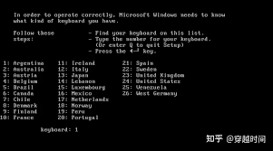
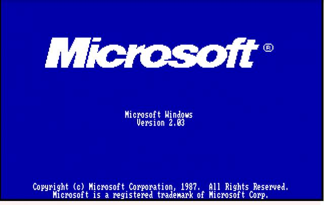
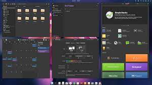
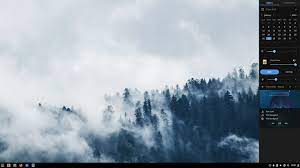
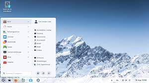

- software de sistema
- software de aplicaçao
- software de programaçao
- software de segurança
- software de base de dados
- software de redes
- software de educaçional
- software de entretenimento
- software de gestao empresarial
- softwere de design assistido por computador(CAD)
software de sistema
Se Você Está Precisando ter Maior Controle e Gerenciamento da sua Empresa a Izy é Solução! Com o Sistema Izy Você tem a Administração da sua Empresa em 1 só Lugar. Não Perca Tempo! Sistema Completo. Milhares de Vantagens. Experimente por 15 Dias. Software 100% Online.
software de aplicaçao
Software aplicativo, aplicativo ou aplicação ou aplicação, é o software projetado através de Linguagem de programação para executar um grupo de funções, tarefas ou atividades coordenadas para o benefício do usuário
programaçao
Programação é o processo de criação de um conjunto de instruções que dizem ao computador como realizar uma tarefa. Programação pode ser feita usando uma variedade de "idiomas" do computador, tais como SQL, Java, Python
.segurança
Proteção contra todas as ameaças novas e existentes. Impacto mínimo no desempenho. Produto do ano. Sem impacto na performance. Proteção de dados completa. Teste Grátis de 30 Dias. Compatível com Windows 10. Escolha do Editor PCMag. Simples de Entender.
software de base de dados
Uma gestão unificada de dados significa menos tempo gasto com manutenção. Além disso, a integração e o fácil acesso às informações e o suporte às mais recentes abordagens de desenvolvimento ajudam a acelerar o processo de criação e a impulsionar a inovação.

software de redes
Com mais de 500.000 instalações ativas, PRTG Network Monitor da Paessler é um software poderoso e amplamente utilizado para a monitoração de redes. PRTG é um software de monitoração de rede que o ajuda a assegurar que seus sistemas de computador funcionem impecavelmente e sem interrupções. O Monitoramento de rede também é importante para aumentar a eficiência de sua rede informando a largura de banda e o consumo de recursos. PRTG cabe em qualquer orçamento e cresce com suas necessidades. Experimente PRTG agora e veja como ele pode tornar sua rede mais confiável e seu trabalho mais fácil. Tudo que você precisa está contido em um instalador simples, sem a necessidade de downloads adicionais. Tornamos tudo mais fácil para você, agora e depois!
software de educaçional
untando as traduções de soft + ware, pode-se inferir que software une o conceito de “leve”, “macio” com o conceito de “artigo”, “produto”. “Leve” porque não é palpável como o hardware (hard = duro). A tradução literal seria: artigo leve. Por isso, a palavra software, assim com a palavra hardware não possuem tradução para o português
software de entretenimento
O novo sistema operacional da Microsoft, o Windows 8, foi lançado oficialmente na última sexta-feira (26) e as pessoas que já realizaram a atualização do software estão descobrindo os novos recursos e a interface do usuário diferenciada. O site Business Insider listou oito serviços de entretenimento para os usuários do novo OS. Confira abaixo a lista com os aplicativos de lazer indispensáveis.
software de gestao empresarial
Os melhores e mais utilizados softwares de gestão empresarial do mercado estão disponíveis em português, sendo que alguns são nacionais e possuem versões gratuitas. Destacamos sete deles: STRATWS One, Conta Azul, QuickBooks, Granatum, Trello, Agendor e Tiny ERP. Todos possuem funcionalidades completas e fáceis de usar.
softwere de design assistido por computador(CAD)
Descobrir qual ferramenta de computer-aided design (desenho assistido por computador — CAD) é a mais adequada para uso profissional pode ser uma tarefa complexa, até porque existem considerações de nível corporativo a ter em mente, como compatibilidade de arquivos, por exemplo. Alguns dos principais softwares hoje se concentram na exploração criativa de design e renderização 3D, enquanto outras são utilizadas para análises mecânicas usando poderosas ferramentas de simulação. Alguns se concentram em setores específicos, enquanto outros oferecem ferramentas mais avançadas como otimização topológica.
- Windows 1.01
- windows 1.02
- windows 1.03
- Windows 1.04
- windows 2.01
- Widnows 2.03
- Windows 2.1
- Windows 2.11
- Windows 3.0
- Windows 3.1
- Windows NT 3.1
- Windows 3.11
- Windows 3.2
- Windows NT 3.5
- Windows NT 3.51
- Windows NT 3.51
- Windows NT 4.0
- Windows 98
- Windows 98 Se
- Windows 2000
O que é o windows?
O Windows é um sistema operacional de interface gráfica multitarefa. Isso significa que podemos trabalhar com vários programas simultaneamente. Por exemplo poderíamos escutar um CD colocado no CD-ROM enquanto escrevemos um documento, imprimimos um outro e recebemos um fax, todos ao mesmo tempo.
Windows 1.01
O Windows 1.0 foi onde tudo começou, lançado em 1985. Até sua chegada, os sistemas operacionais funcionavam apenas em modo texto e este foi o primeiro a oferecer uma interface gráfica em cima do modo texto (MS-DOS) de maneira que qualquer pessoa pudesse interagir com o sistema sem precisar digitar comandos no terminal. Para os padrões de hoje ele pode parecer feio, simples e antiquado, mas saiba que foi extremamente importante por introduzir ao mundo conceitos

windows 1.02
O Windows 1.02 é uma atualização secundária do Windows 1.01 , lançado apenas na Europa em 14 de maio de 1986. Ele inclui layouts de teclado adicionais e versões atualizadas dos aplicativos integrados. O spooler agora diz em qual porta a impressora não está conectada. A maioria dos programas foi atualizada para a versão 1.02, embora alguns tenham permanecido na 1.01. Como esta compilação foi distribuída na Europa, esta versão também está disponível em francês e alemão, tornando esta a primeira versão do Windows não em inglês
windows 1.03
O Windows 1.03 é uma atualização menor do Windows 1.02 , lançado em 21 de agosto de 1986. Ele sucede o 1.01 e o 1.02 como um lançamento universal nos Estados Unidos e em outros mercados. Ele apresenta drivers de dispositivo adicionais, um SDK aprimorado e versões atualizadas do Painel de Controle , Reversi , Write e Paint , apresentando o número da versão 1.03, enquanto o restante permaneceu em 1.02. Existem doze compilações diferentes da versão 1.03 com registros de data e hora variando do verão de 1986 ao final de 1987. Há também uma versão verificada/depurada datada de dezembro de 1986.
Windows 1.04
O Windows 1.0 foi o primeiro lançamento do que acabou chegando a quase todos os computadores desktop do mundo inteiro. Muitos de vocês provavelmente não conhecem este lançamento de 1985; concebido a partir de ideias encontradas nos sistemas originais Lisa/Macintosh e Xerox Star , o Windows 1.0 foi a tentativa da Microsoft de criar um ambiente operacional multitarefa gráfico para o IBM PC.
windows 2.01
Um recurso da conformidade C2 do Windows NT/2000 (Win2K) é que ele implementa proteção contra reutilização de objetos. Isso significa que, quando um aplicativo aloca espaço de arquivo ou memória virtual, ele não consegue visualizar os dados que foram armazenados anteriormente nos recursos que o Windows NT/2K aloca para ele. O Windows NT preenche a memória com zeros e zera os setores no disco onde um arquivo é colocado antes de apresentar qualquer tipo de recurso para um aplicativo. No entanto, a reutilização de objetos não determina que o espaço que um arquivo ocupa antes de ser excluído seja zerado. Isso ocorre porque o Windows NT/2K foi projetado com a suposição de que o sistema operacional controla o acesso aos recursos do sistema. No entanto, quando o sistema operacional não está ativo, é possível usar editores de disco bruto e ferramentas de recuperação para visualizar e recuperar dados desalocados pelo sistema operacional.
Widnows 2.03
Lançado em 1º de novembro de 1987, o Windows 2.0 permitia que as janelas se sobrepusessem, em contraste com o Windows 1.0, que só podia exibir janelas lado a lado (essa limitação foi imposta artificialmente devido a ações judiciais da Apple Computer; caixas de diálogo e menus suspensos eram de fato janelas sobrepostas no Windows 1.0). Esta versão também introduziu a terminologia de manipulação de janela de "Minimizar" e "Maximizar", em oposição a "Iconizar" e "Zoom" no Windows 1.0, e um mecanismo de atalho de teclado mais sofisticado no qual as teclas de atalho foram identificadas sublinhando o caractere que, em conjunto com a tecla "Alt", faria com que eles fossem selecionados. As tarefas de gerenciamento de arquivos ainda eram gerenciadas pelo uso do programa MS-DOS Executive, que era mais orientado a listas do que a ícones.
Windows 2.1
Windows/386 2.01 é a versão mais antiga lançada do Windows 2.x , que foi lançada para o Compaq DeskPro 386. Esta versão específica foi aprimorada com suporte para os novos recursos do processador Intel i386 e foi comercializad\a como "Windows/386" para denote-o separadamente da versão regular. Como esta é uma compilação OEM distribuída pela Compaq, faltam drivers que existem na versão comercial.
Windows 2.11
Microsoft Windows 2.11 lançado em 13 de março de 1989. Ele recebeu algumas melhorias, ajustes e correção de bugs. O Windows 2.11 está disponível em duas edições: Janelas / 286 Windows / 386 Não há grandes diferenças entre essas edições, mas apenas pequenas mudanças.
Windows 3.0
A 22 de maio de 1990, a Microsoft anuncia o Windows 3.0, seguido pouco depois pelo Windows 3.1, em 1992. Em conjunto, as duas edições vendem 10 milhões de cópias durante os dois primeiros anos, tornando-o no sistema operativo Windows mais utilizado de sempre. A escala deste êxito faz com que a Microsoft reavalie os seus planos iniciais. A Memória Virtual melhora os gráficos visuais. Em 1990, o Windows começa a assemelhar-se às suas versões posteriores.

Windows 3.1
Há 30 anos, em 6 de abril de 1992, a Microsoft lançava o Windows 3.1, uma das últimas edições que antecederam o popular Windows 95. Marcante para sua época, o sistema operacional introduziu funcionalidades vistas como fundamentais na computação atual, como o famoso atalho Ctrl + C/Ctrl + V para copiar e colar e dois jogos atemporais: Campo Minado e Paciência.
Windows NT 3.1
Windows NT 3.1 é o primeiro grande lançamento do sistema operacional Windows NT desenvolvido pela Microsoft , lançado em 27 de julho de 1993. Na época do lançamento do Windows NT, o ambiente de desktop Windows 3.1 da Microsoft havia estabelecido reconhecimento de marca e participação de mercado ; mas o Windows 3.1 dependia do sistema operacional DOS para funções essenciais e tinha uma arquitetura restritiva de 16 bits . O Windows NT, no entanto, era um sistema operacional completo de 32 bits que mantinha um ambiente de área de trabalho familiar aos usuários do Windows 3.1.
Windows 3.11
Em 31 de dezembro de 1993, a Microsoft lançou uma atualização para o Windows 3.1, conhecida como Windows 3.11. Assim, o Windows 3.11 não é uma versão autônoma do Windows, mas sim uma atualização de software do Windows 3.1, bem como pacotes de serviço moderno Windows. Para aqueles que não possuíam o Windows 3.1, a versão de Windows 3.11 estavam disponíveis no momento.
Windows 3.2
O Windows 3.2 , também conhecido como Windows 3.2 Chinese Edition , lançado em 22 de novembro de 1993 e lançado oficialmente para fabricação em 27 de abril de 1994, é uma atualização da versão chinesa do Windows 3.1 . A atualização foi limitada a esta versão, pois corrigiu apenas problemas relacionados ao complexo sistema de escrita do idioma chinês. O Windows 3.2 era geralmente vendido por fabricantes de computadores com uma versão de dez discos do MS-DOS que também tinha caracteres chineses simplificados na saída básica e alguns utilitários traduzidos
Windows NT 3.5
O Windows NT 3.5 é uma versão principal do sistema operacional Windows NT desenvolvido pela Microsoft e voltado para empresas. Foi lançado em 21 de setembro de 1994, como sucessor do Windows NT 3.1 e predecessor do Windows NT 3.51 . [3] Um dos principais objetivos durante o desenvolvimento do Windows NT 3.5 foi melhorar o desempenho do sistema operacional. Como resultado, o projeto recebeu o codinome "Daytona", em homenagem ao Daytona International Speedway em Daytona Beach, Flórida . [4] Em 31 de dezembro de 2001, a Microsoft declarou o Windows NT 3.5 obsoleto e parou de fornecer suporte e atualizações para o sistema.
Windows NT 3.51
O Windows NT 3.51 é uma versão principal do sistema operacional Windows NT desenvolvido pela Microsoft e voltado para empresas. É a terceira versão do Windows NT e foi lançada em 30 de maio de 1995, oito meses após o lançamento do Windows NT 3.5 . O aprimoramento mais significativo oferecido nesta versão foi o suporte cliente/servidor para interoperabilidade com o Windows 95 , que foi lançado quase três meses após o NT 3.51. O Windows NT 4.0 se tornou seu sucessor um ano depois. O suporte mainstream para o Windows NT 3.51 Workstation terminou em 31 de dezembro de 2000, [2] e o suporte estendido terminou em 31 de dezembro de 2001, [2]enquanto o suporte principal do Windows NT 3.51 Server terminou em 30 de setembro de 2000, [2] seguido por suporte estendido em 30 de setembro de 2002. [2] Ambas as edições foram sucedidas pelo Windows NT 4.0 Workstation e Windows NT 4.0 Server, respectivamente.
Windows NT 4.0
Windows NT 4.0 (codinome Cairo) é a quarta versão do sistema operacional Microsoft Windows NT, lançado em 1996. É um sistema Windows de 32 bits disponível para estações de trabalho e servidores com interface gráfica semelhante ao Windows 95. Embora oferecesse maior estabilidade do que o Windows 95, era menos flexível do ponto de vista de um computador desktop. Grande parte da estabilidade foi alcançada graças à virtualização do hardware e aos aplicativos que acessavam o sistema através das APIs em vez de usar diretamente o hardware como era feito no MS-DOS, uma prática que continuou com o Windows 95. O uso de APIs em vez do uso direto do hardware exige muito mais trabalho do computador, e alguns aplicativos, como jogos, que fazem uso significativo do hardware, são executados mais lentamente. Embora a maioria dos programas escritos para a API Win32 funcione da mesma forma no Windows 95 e no Windows NT, o suporte insuficiente ao DirectX faz com que a maioria dos jogos 3D não funcione.[4]
Windows 98
Windows 98 (chamado pelo codinome Memphis,[1] durante seu desenvolvimento) é um sistema operacional com interface gráfica desenvolvido pela Microsoft. É o segundo maior lançamento da família de sistemas operacionais Windows 9x, e é o sucessor do Windows 95. Ele foi lançado no formato RTM em 15 de Maio de 1998, e lançado em sua versão varejo em 25 de Junho de 1998. Assim como seu antecessor, o Windows 98 é um produto com sistema híbrido com uma arquitetura de 16-bit/32-bit (x86),[2] com seu boot baseado no MS-DOS.[3] O Windows 98 foi sucedido pelo Windows 98 Second Edition em 5 de Maio de 1999,[4] que posteriormente tem sido sucedido pelo Windows ME em 19 de Junho de 2000.[5] A Microsoft encerrou o suporte regular para o Windows 98 e para o Windows 98 SE em 30 de Junho de 2002, tendo o suporte estendido existente até 11 de Julho de 2006. A famosa música de inicialização do Windows 98 foi escrita pelo engenheiro de som da Microsoft, Ken Kato, que considerou um "feito difícil a fazer",[6] aludindo-se ao som de inicialização do Windows 95.
Windows 98 Se
O Microsoft Windows 98 SE (Nojento e Oito Sephode Edition) foi um pacote de expansão do jogo de origem da merdolândia Windows 98. O pacote inclui: 666 chances de dar a tela azul da morte, 666 chances de dar erro, 666 chances de cair a internet e 666 chances de travar. Novo sistema de alocação dinâmica de backdoors, aumentando de 15 para 1,023 o máximo dos mesmos; O exclusivo Microsoft-User Big-Brother; 50MiBs de templates para o Microsoft Office; 75MiBs de arquivos de WinStyles para lotar seu HD; A sigla SE pode derivar de Só Encrenca, Saco Edition, Sacrifício Eterno, Severos Erros, Severamente Estragado, Severa Estupidez, Séculos Esperando
Windows 2000
O Microsoft Windows 2000 foi um sistema operacional preemptivo, gráfico e de fácil aprendizagem que foi desenvolvido para trabalhar com um ou mais processadores de 32 bits em computadores na arquitetura x86 e 64 bits na arquitetura IA64. É parte de uma linha de sistemas operacionais denominada Microsoft Windows NT e foi lançado em 17 de fevereiro de 2000, sendo o sucessor do Windows NT 4.0. Ele está disponível em quatro versões: Professional, Server, Advanced Server e Datacenter Server. Adicionalmente, a Microsoft oferece o Windows 2000 Advanced Server - Edição Limitada, que foi lançado em 2001 e roda em processadores de 64 bits Itanium. O Windows 2000 é classificado com um sistema operacional de núcleo híbrido, e sua arquitetura é dividida em dois modos: usuário e núcleo. O "modo núcleo" dá acesso total aos recursos do sistema e suporta a execução das aplicações em modo usuário, com acesso restrito aos recursos.
- android
- arch linux
- Centos
- debian
- elementary os
- fedora linux
- gentro linux
- kali linux
- linux lite
- linux mint
- manjaro linux
- mx linux
- open suse
- pop os
- puppy linux
- slackware
- solus
- suse
- zorin
android
O que é Android Android é o nome do sistema operacional baseado em Linux que opera em celulares (smartphones), netbooks e tablets. É desenvolvido pela Open Handset Alliance, uma aliança entre várias empresas, dentre elas a Google.
arch linux
Esta instalação complicada possibilita uma coisa: você pode controlar exatamente o que vai ou não estar no seu SO logo na instalação. Por mais que se faça isso em qualquer outro, na instalação do Arch, seu sistema já sai liso e rodando exatamente como você quiser. Por exemplo, o Mint pode até já sair pronto para uso, mas uma coisa eu te garanto: você não vai usar tudo o que vem lá. Lá existe muita redundância (aplicativos que fazem a mesma coisa), o que principalmente para quem tem pouco armazenamento faz diferença, além de consumir menos memória.

Centos
O CentOS, abreviação de Community ENTerprise Operating System, é uma distribuição Linux de classe corporativa derivada de códigos fonte gratuitamente distribuídos pela Red Hat Enterprise Linux e mantida pelo CentOS Project. A numeração das versões é baseada na numeração do Red Hat Enterprise Linux.
debian
Debian, anteriormente chamado Debian GNU/Linux e hoje apenas Debian, é um sistema operacional composto inteiramente de software livre e mantido oficialmente pelo Projeto Debian. O projeto recebe, ainda, apoio de outros indivíduos e organizações de todo o mundo.
elementary os
O elementary OS ajuda você a manter o controle sobre o que os aplicativos estão fazendo. Quando um aplicativo usa seu microfone, exibimos um indicador para informá-lo. Quando um aplicativo está usando muita energia, informamos no seu indicador de energia.
fedora linux
Fedora é um sistema operacional ou sistema operativo Linux. O sistema operacional Fedora Linux é software livre e de código aberto, e os programas disponíveis dentro de seu repositório de programas também são programas livres que aderem a uma licença livre.
gentro linux
Gentoo Linux é uma metadistribuição baseada no sistema gerenciador de pacotes portage. A nomenclatura usada no desenvolvimento do sistema e seus produtos é inspirada na espécie de pinguim Gentoo.
kali linux
Kali Linux é uma distribuição GNU/Linux baseada no Debian, considerado o sucessor do Back Track. O projeto apresenta várias melhorias, além de mais aplicativos. É voltado principalmente para auditoria e segurança de computadores em geral. É desenvolvido e mantido pela Offensive Security Ltd.
linux lite
Linux Lite é uma distribuição Linux, baseada em Debian e Ubuntu e que utiliza o ambiente de desktop Xfce. O propósito do Linux Lite é a introdução do Linux aos usuários de Windows
linux mint
Linux Mint é uma distribuição Linux irlandesa. Possui duas versões: uma baseada em Ubuntu e outra versão baseada em Debian. Suporta muitos idiomas, incluindo a língua portuguesa, e utiliza o Cinnamon como seu principal ambiente de desktop
manjaro linux
O Manjaro é uma distribuição Linux livre e de código aberto baseada no sistema operacional Arch Linux. O Manjaro se concentra na facilidade de uso e acessibilidade, e o próprio sistema foi projetado para funcionar totalmente "direto da caixa" com sua variedade de softwares pré instalados. Wikipédia Data de lançamento: 10 de julho de 2011
mx linux
O MX Linux é um sistema operacional Linux de peso médio baseado no Debian estável usando componentes antiX centrais com software adicional criado ou empacotado pela comunidade MX. Ele foi desenvolvido como um empreendimento cooperativo entre o antiX e as comunidades do antigo MEPIS.
open suse
openSUSE é um sistema operacional baseado no núcleo Linux, desenvolvido pela comunidade openSUSE de forma gratuita.
pop os
Pop! _OS é uma distribuição Linux gratuita de código aberto, baseada no Ubuntu, e conta com um desktop GNOME personalizado. A distribuição é desenvolvida pela fabricante estadunidense de computadores Linux, chamada System76. O Pop
puppy linux
por Um cachorro francês. O Puppy é muito pequeno, e desenvolvido para ser seguro, fácil de usar e completamente customizável. Todo o sistema operacional e todos os outros aplicativos rodam da memória RAM
slackware
lackware é um das distribuições do Linux mais conhecidas pela sua versatilidade. Hoje existem sistemas baseados no kernel criado por Linus Torvalds que são focados em fornecer o que há de mais novo entre a cultura de softwares livres, uso para exibição de conteúdos multimídia ou desenvolvimento de softwares.
solus
Solus é um sistema operacional independente baseado no kernel Linux. Foi criado como sucessor do SolusOS e EvolveOS, ambos sendo criações anteriores de Ikey Doherty. Hoje é oferecido no modelo rolling release e implementa um novo gerenciador de pacotes baseado no PiSi, chamado eopkg.
suse
traduzido do inglês-A SUSE é uma empresa multinacional de software de código aberto com sede na Alemanha que desenvolve e vende produtos Linux para clientes empresariais. Fundada em 1992, foi a primeira empresa a comercializar Linux para empresas.
zorin
Zorin OS é uma distribuição do sistema operacionalLinux baseada no Ubuntu. Está principalmente orientada a usuários novatos em Linux, porém familiarizados com sistemas operacionais Windows.
